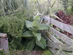
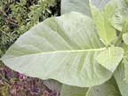
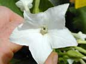
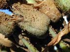
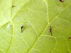

Tobacco
Nicotiana tabacum and N. sylvestris
Other names
Description
N. tabacum and N. sylvestris are tall plants up to 2 m. The leaves are large, hairy, broad, thin and fragile, usually covered with a sticky secretion with an unpleasant smell. The trumpet shaped flowers are white or pink to red in colour. Many seeded capsules may appear in late summer.
Similar plants
N. sylvestris is pictured, N. tabacum (the tobacco of commerce) is very similar, but the flowers are not fragrant. N. alata and the hybrid N. x sanderae are common in gardens.
Distribution
Commercial tobacco originated in South America. Perennial in Mexico, it is cultivated as an annual in commercial growing areas. This plant is not commonly found in New Zealand, except for garden escapes (although it was once grown commercially in the Hutt Valley). Its large leaves, rich in nicotine, are used, after drying, for making of cigars and cigarettes.
Toxin
Nicotine, an alkaloid with an irritating effect on the stomach and intestines and also the nervous system. In a human unaccustomed to tobacco, 4 mg can cause clinical signs, and 60 mg at one time can cause death. Once absorbed, the alkaloids (nicotine), have a saponin like haemolytic action on red blood cells and may produce transient haemoglobinuria. The compounds and their aglycones are extremely depressant to the central nervous system and have a cardiac glycoside – like action on the heart, i.e. act as a positive ionotrope by increasing calcium concentration in myocardium. The leaves are the most toxic part of the plant. Tobacco remains toxic when dried, therefore processed feeds containing tobacco are not safe for consumption. All species of Nicotiana are poisonous, but there have been no reported cases in NZ.
Species affected
All animals may be affected, pets in contact with tobacco products are at risk as are pigs allowed to forage on harvested tobacco fields. However, the green plants taste unpleasant and pigs will not usually eat them. Pets can easily be poisoned by tobacco products in the home, either accidentally or maliciously.
Clinical signs acute
Clinical signs nearly always are present, but only rarely is a lethal dose ingested. The initial signs of poisoning can develop within 10 to 15 minutes or may not manifest for several hours. At first, the irritating effect that tobacco has on the stomach and intestines will cause salivating, vomiting (if capable), and diarrhoea. Shortly after the digestive signs develop, neurologic signs appear. Initially, nicotine stimulates the nervous system, with depression of the nervous system occurring at a later time. Early signs include nervousness, shaking, trembling, a stiff and uncoordinated gait, weakness and collapse. Cardiac abnormalities may be noted as well as breathing difficulties, to the point of respiratory paralysis (the cause of death in lethal cases).
Clinical signs chronic
Birth defects have been well documented when pregnant sows ingest tobacco. The most common defects are limb deformities in the piglets.
Post mortem signs
Hyperaemia of the alimentary tract, often with severe haemorrhage, together with a generalized congestion of the visceral organs.
Diagnosis
Clinical signs, history and on stomach contents.
Differential diagnosis
G.I. irritation alone include: many toxins. Neurological signs include: organophosphate poisoning (nicotine acts as a cholinesterase inhibitor), carbamate poisoning, blue green algae poisoning and hemlock poisoning.
Treatment
symptomatic. This includes gastric lavage, activated charcoal, electrolytes, fluids and anti convulsants. Pilocarpine, physostigmine, or GI protectants may be indicated.
Prognosis
Prognosis is good, provided the animal is decontaminated by either pumping the stomach or administering activated charcoal etc. However, if the animal has ingested a high dose and is not decontaminated, then death through respiratory and cardiac depression is probable.
Prevention
Do not allow pets to be in contact with tobacco or tobacco products. Do not let animals drink from ash trays, since this water can have extremely high concentrations of nicotine. In sows, there is disagreement over whether a "danger window" for consumption of tobacco during gestation exists (there are two possibilities, that on days 10 to 30 of gestation the piglets are susceptible, or that anything after 30 days is dangerous). Do not let pregnant sows graze on tobacco.
References
Conner H.E. The Poisonous Plants In New Zealand. 1992. GP Publications Ltd, Wellington
Parton K, Bruere A.N. and Chambers J.P. Veterinary Clinical Toxicology, 2nd ed. 2001. Veterinary Continuing Education Publication No. 208
 plant |
||
|
 |
 |
|
|
 |
 leaf |
|
|
|
||